# Only Need To Run This Once
install.packages(c("caret", # Primary Machine Learning Package in R
"adabag", # For Random Forest Bagging
"glmnet", # For Generalized Linear Modeling
"neuralnet", # For Neural Networks
"e1071", # For Support Vector Machines
"pls", # For Principal Component Regression
"randomForest", # For Random Forests
"gbm", # For Gradient Boosting
"xgboost", # For Extreme Gradient Boosting
"kernlab", # For Support Vector Machines
"shapr", # For Visualizations
"PerformanceAnalytics", # Assessing Model Performance
"RANN", # Data Preprocessing (Imputation)
"purrr", # Extended Functionality For Processing Data
"tidyr", # Extended Functionality For Processing Data
"reshape2", # For Data Manipulation
"plotmo", # For Visualizations
"naniar", # For Visualizations
"UpSetR", # For Visualizations
"GGally", # For Visualizations
"ggplot2", # For Visualizations
"rattle", # For Visualizations
"kernelshap", # For Visualizations
"shapviz", # For Visualizations
"xtable" # For Printing RMarkdown Tables
)
)ecoML Workshop Lab
Quick Intro
The lab is written in Quarto, which uses successive chunks of code to iterate through many machine learning models and compare the results.
You will start with one dataset and a goal of regression. From there you will run a sequence of models, and look at performance metrics to decide which machine learning model is best suited for the data.
You can proceed however you would like through learning the different methods, but my suggestion is to run the code line by line to understand what is happening at each step.
Lastly there is an optional section to install Tensorflow for regression and image classification.
To begin, let’s get the packages we need.
Packages
There are MANY packages that have accumulated over the years for machine learning in R. Fortunately, the developers behind CARET recognized there was a need for a single package to bring them all together. CARET uses wrapper functions and some clever coding to make machine learning tasks fast and easier in the R language by using the same simple syntax for almost all of our machine learning needs.
############ Library Loading
library(caret)
library(ggplot2)
library(GGally)
library(rattle)
library(adabag)
library(PerformanceAnalytics)
library(glmnet)
library(plotmo)
library(neuralnet)
library(e1071)
library(purrr)
library(tidyr)
library(naniar)
library(UpSetR)
library(RANN)
library(pls)
library(randomForest)
library(gbm)
library(kernelshap)
library(shapviz)
library(kernlab)
library(xtable)
options(xtable.comment = FALSE)
set.seed(12) # Forces our random numbers to be reproducibleData
Our main goal for today is analyze some eddy covariance flux data.
flux<-read.csv("https://raw.githubusercontent.com/JeremyDForsythe/PersonalWebsite/master/content/teaching/MachineLearningInR/US-SB3_2023_Example.csv")
colnames(flux)[1] "TIMESTAMP_END" "NEE" "SW_IN" "TA"
[5] "VPD" "SWC" The data has time information (TIMESTAMP_END), Net Ecosystem Exchange (NEE), and some of the common drivers of photosynthesis: Incoming Solar Radiation (SW_IN), Air Temperature (TA), Vapor Pressure Deficit (VPD), and Soil Moisture (SWC).
First, let’s tell R that TIMESTAMP_END is date and time information:
flux$TIMESTAMP_END<-as.POSIXct(as.character(flux$TIMESTAMP_END),
tz="EST",
format = "%Y-%m-%d %H:%M:%S")Next let’s look at NEE (NOTE: NEE follows the atmospheric sign convention and is negative when carbon is going into the plants from the atmosphere.):
plot(NEE~TIMESTAMP_END,
data = flux,
col = 'cornflowerblue',
xlab = '',
ylab = expression(paste("NEE (", mu, "mol CO2 m-2 s-1)")))
abline(h=0, col = 'indianred', lwd = 3)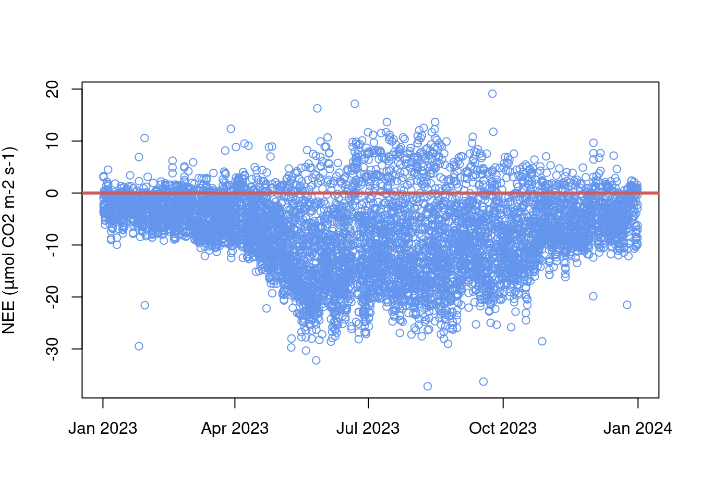
Let’s look at the other variables to get to know our data.
par(mfrow=c(2,2))
plot(TA~TIMESTAMP_END,
data = flux,
col = "plum",
xlab = '',
ylab = "Air Temperature (Deg C)"
)
plot(SW_IN~TIMESTAMP_END,
data = flux,
col = "darkorange1",
xlab = '',
ylab = "Incoming Shortwave (W m-2)"
)
plot(VPD~TIMESTAMP_END,
data = flux,
col = "firebrick4",
xlab = '',
ylab = "Vapor Pressure Deficit (hPa)"
)
plot(SWC~TIMESTAMP_END,
data = flux,
col = "dodgerblue3",
xlab = '',
ylab = "Soil Water Content (%)"
)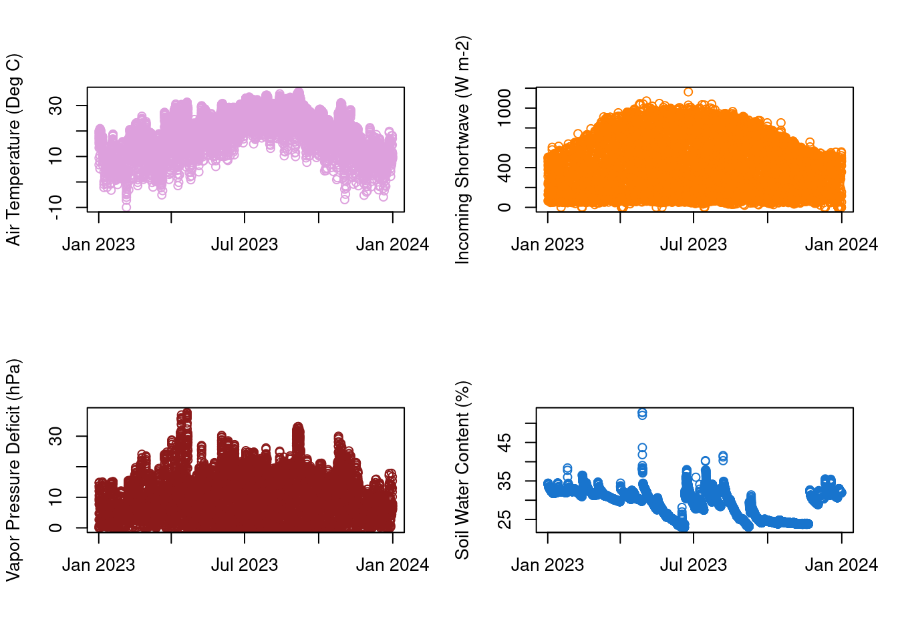
flux %>%
keep(is.numeric) %>%
gather() %>%
ggplot(aes(value)) +
facet_wrap(~ key, scales = "free") +
geom_histogram()`stat_bin()` using `bins = 30`. Pick better value with `binwidth`.Warning: Removed 691 rows containing non-finite outside the scale range
(`stat_bin()`).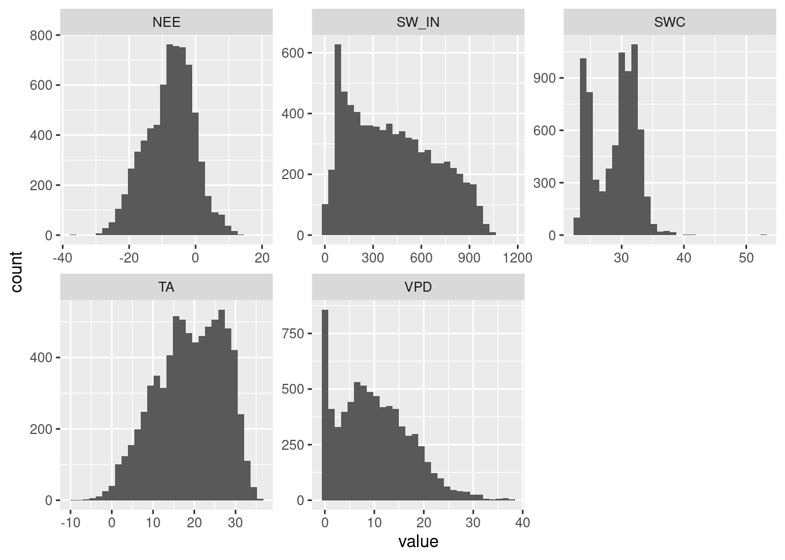
Data Preprocessing
Dealing With NAs
Eddy Covariance is a great tool for making timeseries of fluxes and weather variables, but occasionally something goes wrong at the sensor and the data is bad (represented as NA in our data).
We are going to do both prediction and inference with this data by analyzing the important drivers of NEE using Machine Learning and using those drivers to gap fill NEE.
target<-"NEE" # Could be multiple targets
predictors<-c("SW_IN","VPD","TA","SWC")Next let’s look at the data gaps in the target:
vis_miss(flux[target], warn_large_data = FALSE)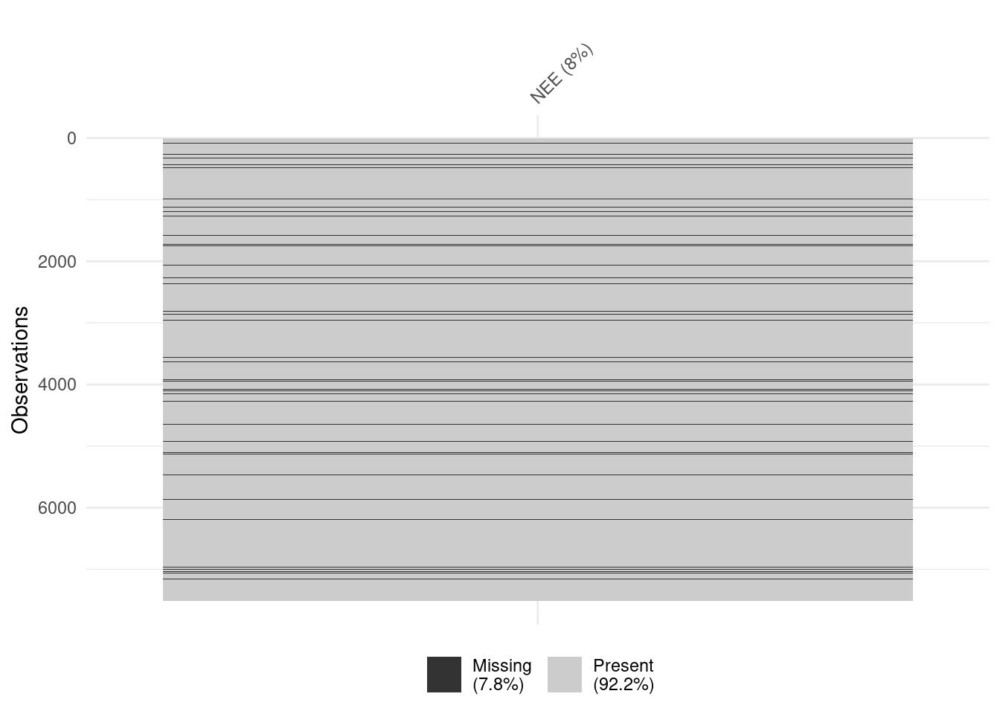
Now the predictors:
vis_miss(flux[predictors], warn_large_data = FALSE)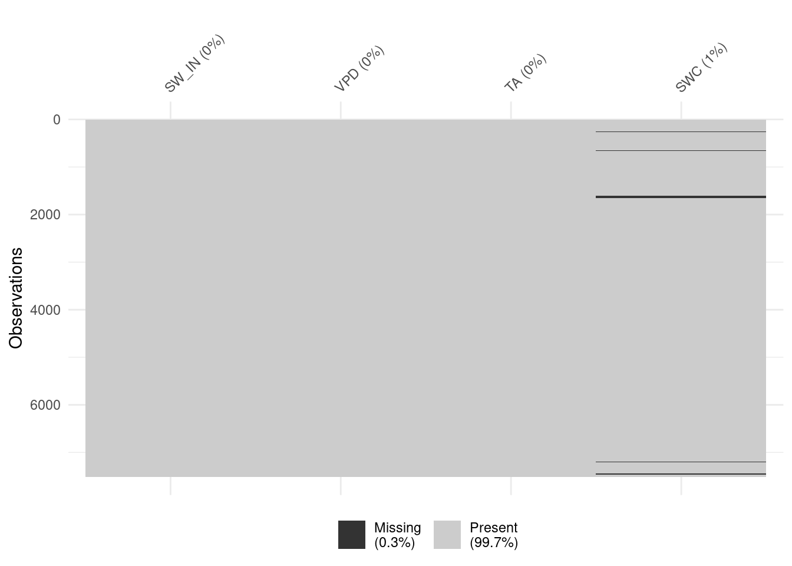
One of our predictors also has missing data, SWC is missing 1%. We now have a choice to make. We can exclude those rows, or “impute” the data which is a form of gapfilling. Imputation preserves all cases by replacing missing data with an estimated value based on other available information. I wouldn’t normally impute soil moisture from temperature, sunlight, and VPD but for the sake of showing you, that’s what I am going to do. Be careful with this choice though, and make sure you can back it up scientifically. When in doubt, remove the rows with any NAs.
### Impute To Gapfill NAs in Predictor Datasets with K-Nearest Neighbor Imputation
PreImputeKNN <- preProcess(flux[predictors],method="knnImpute",k=5)
DataImputeKNN <- predict(PreImputeKNN, flux[predictors]) # Note: Standardizes the Data
Rescale<- as.data.frame(t(t(DataImputeKNN)*PreImputeKNN$std+PreImputeKNN$mean)) #Convert back to original scale
ImputeFlux<-cbind(flux[target],Rescale)
rm(PreImputeKNN,DataImputeKNN,Rescale)
vis_miss(ImputeFlux, warn_large_data = FALSE)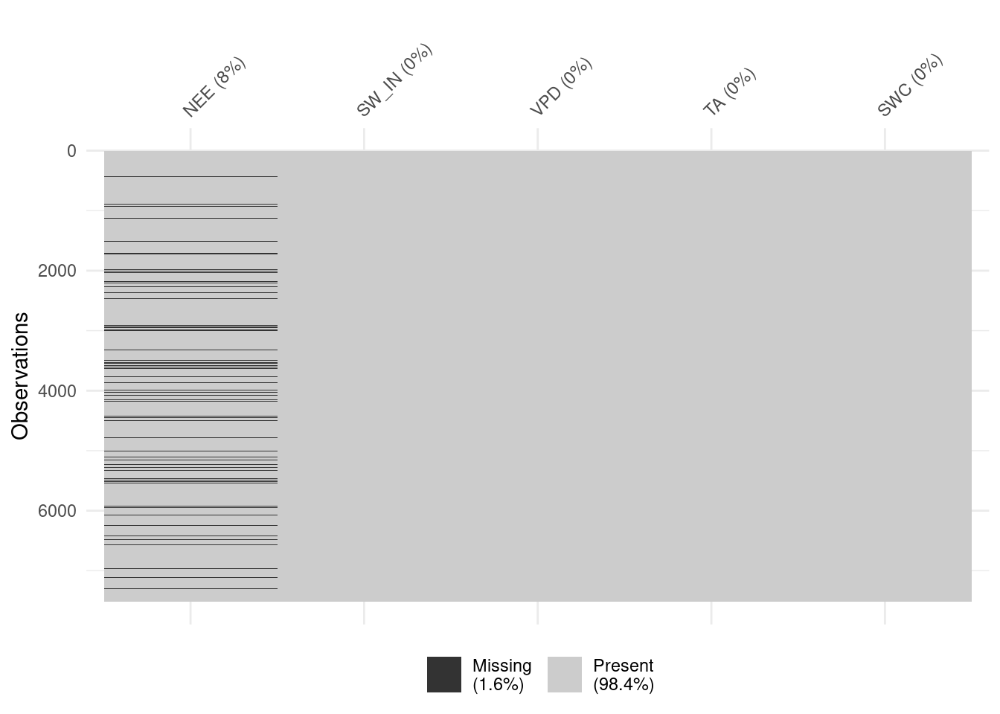
### For Model Training Remove NAs in Target
Impute<-ImputeFlux[complete.cases(ImputeFlux), ]Data partitioning
In a typical machine learning problem, you have a data set and you need to create a model which predicts the outcomes.
You can use all the available data for training the model (that is, learning the associations between the data and the outcomes), and
then you can just keep your fingers crossed and hope that your model will perform well when it will be applied to data that it has never seen before.
A more realistic behavior is to reserve some of the data for testing the model. That is, you split the data into two sets: a training set and a testing set.
You use the training set to train the model, and then you apply the test set to get an estimate on how well the model works on the data that were not used for training. This is called cross-validation.
It is absolutely critical that the training and test sets are completely independent. Otherwise, when you test your model, your prediction accuracy will be artificially high – not because your model is good, but because there is some correlation between the training and test sets.
The more data you have for training, the more hope you can have that the model will accurately capture the relationships between the inputs and the outcomes. The more data you have for testing, the more accurate is your estimate on how well your model generalizes. So splitting the data into training and test sets is not a trivial task, with a lot of research performed on it. Some strategies are:
- leave-one-out cross-validation (“LOO”). Here, we maximize the training set: only one observation is used for test, and remaining observations are used for training. This is done in a loop, so each observation gets its turn to be in the test set. This procedure is common when you work with small datasets.
- 80-20 split: 80% of the data are used for training, and 20% for testing. Again, this is done in a loop. One strategy is to get a random sample of 20% of the data, in a loop; at the next iteration, you can get another random sample of 20% etc. Another strategy is to first use the first 20%, at the next iteration you use the next 20%, etc; this way, you can have 5 iterations to go through the whole data set. This is also called 5-fold cross-validation.
- A general idea of k-fold cross-validation is to break up the data into k chunks and, at each iteration, use one of the chunks for testing and the rest of the data for training.
- split-half: the data are evenly split into training and test sets. First, you use on half for training and the other for testing; second, you use the second half for training and the first half for testing. The amount of training data is relatively small, but this way is sometimes used if the stability of the model is just as important as the classification accuracy.
For today’s example we are going to randomly split 60% data for training and keep the rest for testing.
partitionIndex <- createDataPartition(y=Impute$NEE,p=0.6,list=FALSE,times=1) #Create the index of 'keeps'
training <- Impute[partitionIndex,] # Convert 'keeps' to Training
testing <- Impute[-partitionIndex,] # The Rest to TestingThen using K-fold: Cross validation approach to skip the validation set. The procedure has a single parameter called k that refers to the number of groups that a given data sample is to be split into. For more info visit : https://scikit-learn.org/stable/modules/cross_validation.html
fitControl <- trainControl(method="cv", number=10, allowParallel = TRUE) #in this case k=10 Begin Machine Learning
Models are quite numerous: Check http://topepo.github.io/caret/train-models-by-tag.html for all options!
Linear Regression
Let’s start simple with linear regression:
model <- train(NEE~., data=training,
trControl=fitControl, method="lm")
# summarize results
print(model)Linear Regression
4160 samples
4 predictor
No pre-processing
Resampling: Cross-Validated (10 fold)
Summary of sample sizes: 3744, 3744, 3744, 3744, 3744, 3744, ...
Resampling results:
RMSE Rsquared MAE
4.243409 0.6638726 3.200485
Tuning parameter 'intercept' was held constant at a value of TRUE# Make Predictions
prediction_train<- predict(model,training)
prediction_test<- predict(model,testing)
# Evaluate the Regression Model
cor(prediction_test,testing) NEE SW_IN VPD TA SWC
[1,] 0.8146539 -0.9603192 -0.4873968 -0.5101224 0.2968282cor.test(prediction_test,testing$NEE)
Pearson's product-moment correlation
data: prediction_test and testing$NEE
t = 73.904, df = 2768, p-value < 2.2e-16
alternative hypothesis: true correlation is not equal to 0
95 percent confidence interval:
0.8017357 0.8268113
sample estimates:
cor
0.8146539 postResample(prediction_train,training$NEE) #To get RMSE RMSE Rsquared MAE
4.2405246 0.6635506 3.1967113 postResample(prediction_test,testing$NEE) RMSE Rsquared MAE
4.246887 0.663661 3.187083 Results<-data.frame(Output='NEE', Model='LinearRegression',
TrainRMSE = postResample(prediction_train,training$NEE)[[1]],
TestRMSE = postResample(prediction_test,testing$NEE)[[1]],
TrainR2 = postResample(prediction_train,training$NEE)[[2]],
TestR2 = postResample(prediction_test,testing$NEE)[[2]])
rm(model, prediction_test,prediction_train)Stepwise Linear Regression based on AIC
model <- train(NEE~., data=training,method="lmStepAIC")Start: AIC=12160.13
.outcome ~ SW_IN + VPD + TA + SWC
Df Sum of Sq RSS AIC
<none> 77186 12160
- TA 1 2650 79836 12298
- SWC 1 5653 82839 12452
- VPD 1 5936 83122 12466
- SW_IN 1 98474 175661 15579
Start: AIC=12083.68
.outcome ~ SW_IN + VPD + TA + SWC
Df Sum of Sq RSS AIC
<none> 75781 12084
- TA 1 2719 78500 12228
- SWC 1 6154 81934 12406
- VPD 1 6628 82409 12430
- SW_IN 1 104593 180373 15689
Start: AIC=11910.62
.outcome ~ SW_IN + VPD + TA + SWC
Df Sum of Sq RSS AIC
<none> 72693 11911
- TA 1 2982 75674 12076
- VPD 1 5576 78269 12216
- SWC 1 6305 78998 12255
- SW_IN 1 104731 177424 15621
Start: AIC=12014.7
.outcome ~ SW_IN + VPD + TA + SWC
Df Sum of Sq RSS AIC
<none> 74534 12015
- TA 1 2959 77493 12175
- VPD 1 4971 79506 12281
- SWC 1 5136 79671 12290
- SW_IN 1 100460 174995 15563
Start: AIC=11923.84
.outcome ~ SW_IN + VPD + TA + SWC
Df Sum of Sq RSS AIC
<none> 72924 11924
- TA 1 2770 75694 12077
- VPD 1 5279 78203 12213
- SWC 1 5440 78364 12221
- SW_IN 1 102218 175142 15567
Start: AIC=12200.33
.outcome ~ SW_IN + VPD + TA + SWC
Df Sum of Sq RSS AIC
<none> 77936 12200
- TA 1 2464 80399 12328
- VPD 1 5442 83377 12479
- SWC 1 5589 83525 12486
- SW_IN 1 103996 181932 15725
Start: AIC=12104.95
.outcome ~ SW_IN + VPD + TA + SWC
Df Sum of Sq RSS AIC
<none> 76169 12105
- TA 1 2886 79056 12258
- SWC 1 4640 80809 12349
- VPD 1 5298 81467 12383
- SW_IN 1 100819 176988 15610
Start: AIC=11889.25
.outcome ~ SW_IN + VPD + TA + SWC
Df Sum of Sq RSS AIC
<none> 72320 11889
- TA 1 2384 74704 12022
- VPD 1 4912 77233 12161
- SWC 1 6309 78629 12235
- SW_IN 1 107343 179664 15673
Start: AIC=12094.8
.outcome ~ SW_IN + VPD + TA + SWC
Df Sum of Sq RSS AIC
<none> 75983 12095
- TA 1 3338 79322 12272
- SWC 1 6336 82319 12426
- VPD 1 7220 83204 12470
- SW_IN 1 107795 183779 15767
Start: AIC=11872.75
.outcome ~ SW_IN + VPD + TA + SWC
Df Sum of Sq RSS AIC
<none> 72034 11873
- TA 1 2887 74921 12034
- VPD 1 5638 77672 12184
- SWC 1 6994 79028 12256
- SW_IN 1 99983 172017 15492
Start: AIC=12072.68
.outcome ~ SW_IN + VPD + TA + SWC
Df Sum of Sq RSS AIC
<none> 75580 12073
- TA 1 3532 79112 12261
- VPD 1 5827 81407 12380
- SWC 1 5838 81418 12380
- SW_IN 1 97643 173224 15521
Start: AIC=12143.08
.outcome ~ SW_IN + VPD + TA + SWC
Df Sum of Sq RSS AIC
<none> 76870 12143
- TA 1 3030 79900 12302
- VPD 1 5052 81923 12406
- SWC 1 6912 83783 12499
- SW_IN 1 94533 171403 15477
Start: AIC=11913.47
.outcome ~ SW_IN + VPD + TA + SWC
Df Sum of Sq RSS AIC
<none> 72742 11914
- TA 1 3297 76039 12096
- SWC 1 5498 78241 12215
- VPD 1 6076 78818 12245
- SW_IN 1 104096 176839 15607
Start: AIC=11853.98
.outcome ~ SW_IN + VPD + TA + SWC
Df Sum of Sq RSS AIC
<none> 71710 11854
- TA 1 2164 73874 11976
- VPD 1 5212 76921 12144
- SWC 1 6039 77749 12188
- SW_IN 1 100535 172244 15497
Start: AIC=12190.35
.outcome ~ SW_IN + VPD + TA + SWC
Df Sum of Sq RSS AIC
<none> 77749 12190
- TA 1 2556 80304 12323
- VPD 1 5234 82983 12459
- SWC 1 5876 83625 12491
- SW_IN 1 105100 182848 15746
Start: AIC=11964.63
.outcome ~ SW_IN + VPD + TA + SWC
Df Sum of Sq RSS AIC
<none> 73643 11965
- TA 1 2262 75905 12088
- VPD 1 4839 78482 12227
- SWC 1 6343 79985 12306
- SW_IN 1 100144 173787 15534
Start: AIC=12165.22
.outcome ~ SW_IN + VPD + TA + SWC
Df Sum of Sq RSS AIC
<none> 77281 12165
- TA 1 3738 81019 12360
- SWC 1 5039 82320 12426
- VPD 1 5898 83178 12469
- SW_IN 1 105459 182739 15743
Start: AIC=11883.87
.outcome ~ SW_IN + VPD + TA + SWC
Df Sum of Sq RSS AIC
<none> 72227 11884
- TA 1 2686 74912 12034
- VPD 1 5046 77272 12163
- SWC 1 5639 77866 12195
- SW_IN 1 100454 172681 15508
Start: AIC=12149.9
.outcome ~ SW_IN + VPD + TA + SWC
Df Sum of Sq RSS AIC
<none> 76997 12150
- TA 1 2198 79195 12265
- VPD 1 4949 81946 12407
- SWC 1 6827 83823 12501
- SW_IN 1 105604 182601 15740
Start: AIC=12131.15
.outcome ~ SW_IN + VPD + TA + SWC
Df Sum of Sq RSS AIC
<none> 76650 12131
- TA 1 2682 79333 12272
- SWC 1 5448 82098 12415
- VPD 1 6355 83006 12460
- SW_IN 1 103060 179710 15674
Start: AIC=11998.21
.outcome ~ SW_IN + VPD + TA + SWC
Df Sum of Sq RSS AIC
<none> 74240 11998
- TA 1 3353 77593 12180
- VPD 1 4935 79174 12264
- SWC 1 5184 79423 12277
- SW_IN 1 98468 172707 15508
Start: AIC=12171.45
.outcome ~ SW_IN + VPD + TA + SWC
Df Sum of Sq RSS AIC
<none> 77396 12171
- TA 1 3004 80401 12328
- SWC 1 4011 81407 12380
- VPD 1 4278 81674 12393
- SW_IN 1 96199 173595 15530
Start: AIC=11987.66
.outcome ~ SW_IN + VPD + TA + SWC
Df Sum of Sq RSS AIC
<none> 74052 11988
- TA 1 2478 76529 12123
- VPD 1 4335 78386 12222
- SWC 1 5906 79957 12305
- SW_IN 1 96355 170407 15453
Start: AIC=12120.73
.outcome ~ SW_IN + VPD + TA + SWC
Df Sum of Sq RSS AIC
<none> 76459 12121
- TA 1 3322 79780 12296
- VPD 1 5437 81896 12404
- SWC 1 5606 82064 12413
- SW_IN 1 101455 177913 15632
Start: AIC=11920.87
.outcome ~ SW_IN + VPD + TA + SWC
Df Sum of Sq RSS AIC
<none> 72872 11921
- TA 1 2177 75049 12041
- VPD 1 4402 77274 12163
- SWC 1 5104 77976 12200
- SW_IN 1 99219 172091 15494
Start: AIC=12029.8
.outcome ~ SW_IN + VPD + TA + SWC
Df Sum of Sq RSS AIC
<none> 74805 12030
- TA 1 2637 77443 12172
- VPD 1 4993 79798 12297
- SWC 1 5651 80456 12331
- SW_IN 1 100565 175370 15572summary(model$finalModel) # Note: The 'stars' next to the input indicate the statistical sig.
Call:
lm(formula = .outcome ~ SW_IN + VPD + TA + SWC, data = dat)
Residuals:
Min 1Q Median 3Q Max
-33.890 -2.332 0.026 2.626 24.614
Coefficients:
Estimate Std. Error t value Pr(>|t|)
(Intercept) -7.4547018 0.6414547 -11.62 <2e-16 ***
SW_IN -0.0231832 0.0003102 -74.74 <2e-16 ***
VPD 0.2215387 0.0133031 16.65 <2e-16 ***
TA -0.1338860 0.0110620 -12.10 <2e-16 ***
SWC 0.3500392 0.0197581 17.72 <2e-16 ***
---
Signif. codes: 0 '***' 0.001 '**' 0.01 '*' 0.05 '.' 0.1 ' ' 1
Residual standard error: 4.243 on 4155 degrees of freedom
Multiple R-squared: 0.6636, Adjusted R-squared: 0.6632
F-statistic: 2049 on 4 and 4155 DF, p-value: < 2.2e-16# Make Predictions
prediction_train<- predict(model,training)
prediction_test<- predict(model,testing)
# Evaluate the Regression Model
cor(prediction_test,testing) NEE SW_IN VPD TA SWC
[1,] 0.8146539 -0.9603192 -0.4873968 -0.5101224 0.2968282cor.test(prediction_test,testing$NEE)
Pearson's product-moment correlation
data: prediction_test and testing$NEE
t = 73.904, df = 2768, p-value < 2.2e-16
alternative hypothesis: true correlation is not equal to 0
95 percent confidence interval:
0.8017357 0.8268113
sample estimates:
cor
0.8146539 postResample(prediction_train,training$NEE) #To get RMSE RMSE Rsquared MAE
4.2405246 0.6635506 3.1967113 postResample(prediction_test,testing$NEE) RMSE Rsquared MAE
4.246887 0.663661 3.187083 Results<-rbind(Results,c("NEE", "StepWiseRegression",
postResample(prediction_train,training$NEE)[[1]],
postResample(prediction_test,testing$NEE)[[1]],
postResample(prediction_train,training$NEE)[[2]],
postResample(prediction_test,testing$NEE)[[2]]))
rm(model, prediction_test,prediction_train)Polynomial Regression with degree of freedom=3
model <- train(NEE~poly(SW_IN,3)+poly(TA,3)+poly(SWC,3)+poly(VPD,3),
data=training, preProcess=c("center","scale"), method="lm")
# method = "center" subtracts the mean of the predictor's data from the data in x from the predictor values while method = "scale" divides by the standard deviation.
summary(model$finalModel)
Call:
lm(formula = .outcome ~ ., data = dat)
Residuals:
Min 1Q Median 3Q Max
-36.301 -2.273 0.262 2.563 24.690
Coefficients:
Estimate Std. Error t value Pr(>|t|)
(Intercept) -7.72075 0.06099 -126.600 < 2e-16 ***
`poly(SW_IN, 3)1` -5.75695 0.07694 -74.819 < 2e-16 ***
`poly(SW_IN, 3)2` 0.67108 0.06423 10.448 < 2e-16 ***
`poly(SW_IN, 3)3` -0.16030 0.06121 -2.619 0.008858 **
`poly(TA, 3)1` -1.14439 0.08485 -13.487 < 2e-16 ***
`poly(TA, 3)2` -0.40661 0.06642 -6.122 1.01e-09 ***
`poly(TA, 3)3` 0.31608 0.06299 5.018 5.45e-07 ***
`poly(SWC, 3)1` 1.28228 0.06538 19.612 < 2e-16 ***
`poly(SWC, 3)2` -0.22715 0.06192 -3.669 0.000247 ***
`poly(SWC, 3)3` -0.27620 0.06198 -4.457 8.55e-06 ***
`poly(VPD, 3)1` 1.45410 0.09129 15.928 < 2e-16 ***
`poly(VPD, 3)2` 1.22566 0.06713 18.259 < 2e-16 ***
`poly(VPD, 3)3` -0.49102 0.06494 -7.561 4.89e-14 ***
---
Signif. codes: 0 '***' 0.001 '**' 0.01 '*' 0.05 '.' 0.1 ' ' 1
Residual standard error: 3.933 on 4147 degrees of freedom
Multiple R-squared: 0.7114, Adjusted R-squared: 0.7106
F-statistic: 851.9 on 12 and 4147 DF, p-value: < 2.2e-16# Make Predictions
prediction_train<- predict(model,training)
prediction_test<- predict(model,testing)
# Evaluate the Regression Model
cor(prediction_test,testing) NEE SW_IN VPD TA SWC
[1,] 0.8417282 -0.9318814 -0.4751798 -0.4872013 0.2864477cor.test(prediction_test,testing$NEE)
Pearson's product-moment correlation
data: prediction_test and testing$NEE
t = 82.024, df = 2768, p-value < 2.2e-16
alternative hypothesis: true correlation is not equal to 0
95 percent confidence interval:
0.8305208 0.8522542
sample estimates:
cor
0.8417282 postResample(prediction_train,training$NEE) #To get RMSE RMSE Rsquared MAE
3.9272879 0.7114201 2.9927108 postResample(prediction_test,testing$NEE) RMSE Rsquared MAE
3.9543190 0.7085063 3.0083919 Results<-rbind(Results,c("NEE", "PolynomialRegression",
postResample(prediction_train,training$NEE)[[1]],
postResample(prediction_test,testing$NEE)[[1]],
postResample(prediction_train,training$NEE)[[2]],
postResample(prediction_test,testing$NEE)[[2]]))
rm(model, prediction_test,prediction_train)Principal Component Regression
Linear Regression using the output of a Principal Component Analysis (PCA). PCR is skillful when data has lots of highly correlated predictors.
model <- train(NEE~.,data=training,method="pcr")
summary(model$finalModel)Data: X dimension: 4160 4
Y dimension: 4160 1
Fit method: svdpc
Number of components considered: 3
TRAINING: % variance explained
1 comps 2 comps 3 comps
X 99.86 99.96 99.98
.outcome 60.98 61.16 64.34# Make Predictions
prediction_train<- predict(model,training)
prediction_test<- predict(model,testing)
# Evaluate the Regression Model
cor(prediction_test,testing) NEE SW_IN VPD TA SWC
[1,] 0.802608 -0.9742315 -0.4963897 -0.5343393 0.1431808cor.test(prediction_test,testing$NEE)
Pearson's product-moment correlation
data: prediction_test and testing$NEE
t = 70.79, df = 2768, p-value < 2.2e-16
alternative hypothesis: true correlation is not equal to 0
95 percent confidence interval:
0.7889479 0.8154751
sample estimates:
cor
0.802608 postResample(prediction_train,training$NEE) #To get RMSE RMSE Rsquared MAE
4.3655942 0.6434115 3.2695168 postResample(prediction_test,testing$NEE) RMSE Rsquared MAE
4.3678747 0.6441796 3.2232354 Results<-rbind(Results,c("NEE", "PCARegression",
postResample(prediction_train,training$NEE)[[1]],
postResample(prediction_test,testing$NEE)[[1]],
postResample(prediction_train,training$NEE)[[2]],
postResample(prediction_test,testing$NEE)[[2]]))
rm(model, prediction_test,prediction_train)Decision Trees
model <- train(NEE~.,data=training,method="rpart",
parms = list(split = "ginni")) # ginni can be replaced by chisquare, entropy, informationWarning in nominalTrainWorkflow(x = x, y = y, wts = weights, info = trainInfo,
: There were missing values in resampled performance measures.fancyRpartPlot(model$finalModel)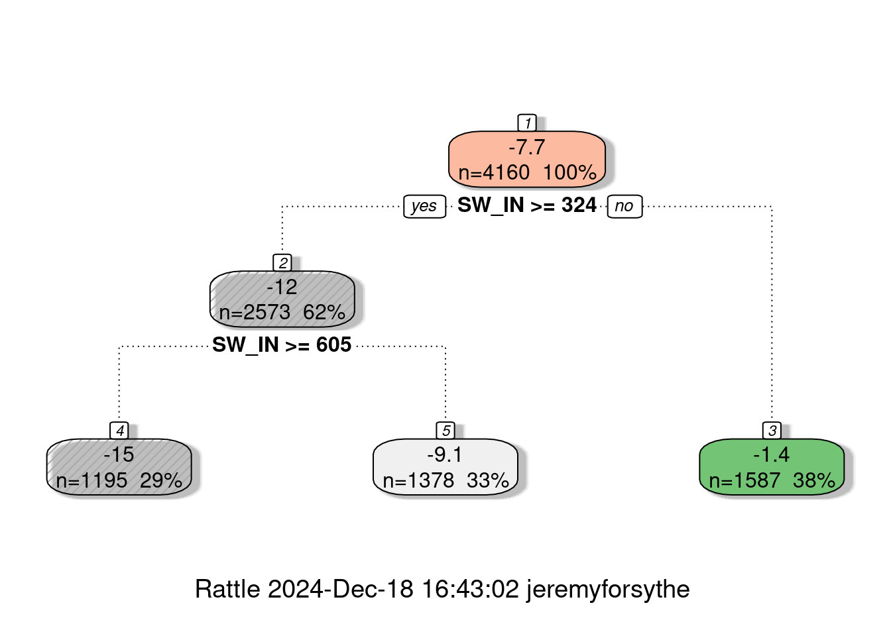
# Make Predictions
prediction_train<- predict(model,training)
prediction_test<- predict(model,testing)
# Evaluate
cor(prediction_test,testing) NEE SW_IN VPD TA SWC
[1,] 0.7368412 -0.9304544 -0.5518993 -0.4079882 0.08495264cor.test(prediction_test,testing$NEE)
Pearson's product-moment correlation
data: prediction_test and testing$NEE
t = 57.341, df = 2768, p-value < 2.2e-16
alternative hypothesis: true correlation is not equal to 0
95 percent confidence interval:
0.7193385 0.7534089
sample estimates:
cor
0.7368412 postResample(prediction_train,training$NEE) #To get RMSE RMSE Rsquared MAE
4.8980837 0.5511171 3.8096627 postResample(prediction_test,testing$NEE) RMSE Rsquared MAE
4.9506771 0.5429349 3.8149195 Results<-rbind(Results,c("NEE", "DecisionTree",
postResample(prediction_train,training$NEE)[[1]],
postResample(prediction_test,testing$NEE)[[1]],
postResample(prediction_train,training$NEE)[[2]],
postResample(prediction_test,testing$NEE)[[2]]))
rm(model, prediction_test,prediction_train)Random Forest
Use bootstrapping technique to grow multiple trees:
model <- train(NEE~.,data=training,method="rf",trControl = fitControl) # This takes a LONG time
# Make Predictions
prediction_train<- predict(model,training)
prediction_test<- predict(model,testing)
# Evaluate
cor(prediction_test,testing) NEE SW_IN VPD TA SWC
[1,] 0.9019696 -0.8729649 -0.4644515 -0.4689101 0.2562649cor.test(prediction_test,testing$NEE)
Pearson's product-moment correlation
data: prediction_test and testing$NEE
t = 109.9, df = 2768, p-value < 2.2e-16
alternative hypothesis: true correlation is not equal to 0
95 percent confidence interval:
0.8947843 0.9086879
sample estimates:
cor
0.9019696 postResample(prediction_train,training$NEE) #To get RMSE RMSE Rsquared MAE
1.4056881 0.9660806 0.9740779 postResample(prediction_test,testing$NEE) RMSE Rsquared MAE
3.1621687 0.8135491 2.1972323 Results<-rbind(Results,c("NEE", "RandomForest",
postResample(prediction_train,training$NEE)[[1]],
postResample(prediction_test,testing$NEE)[[1]],
postResample(prediction_train,training$NEE)[[2]],
postResample(prediction_test,testing$NEE)[[2]]))
rm(model, prediction_test,prediction_train)Bagging (Bootstrap Aggregation)
model <- train(NEE~.,data=training,
method="treebag", #Other methods : bagFDA, ldaBag, plsBag
importance=TRUE)
# Make Predictions
prediction_train<- predict(model,training)
prediction_test<- predict(model,testing)
# Evaluate
postResample(prediction_train,training$NEE) #To get RMSE RMSE Rsquared MAE
3.900029 0.716986 2.966323 postResample(prediction_test,testing$NEE) RMSE Rsquared MAE
4.0582118 0.6932847 3.0398367 Results<-rbind(Results,c("NEE", "Bagging",
postResample(prediction_train,training$NEE)[[1]],
postResample(prediction_test,testing$NEE)[[1]],
postResample(prediction_train,training$NEE)[[2]],
postResample(prediction_test,testing$NEE)[[2]]))
rm(model, prediction_test,prediction_train)Gradient Boosting
Ensemble of shallow and weak successive trees, with each tree learning and improving on the previous.
model<- train(NEE~.,data=training,method="gbm",verbose=FALSE)
model$finalModelA gradient boosted model with gaussian loss function.
150 iterations were performed.
There were 4 predictors of which 4 had non-zero influence.# Make Predictions
prediction_train<- predict(model,training)
prediction_test<- predict(model,testing)
# Evaluate
postResample(prediction_train,training$NEE) #To get RMSE RMSE Rsquared MAE
3.167317 0.812826 2.327787 postResample(prediction_test,testing$NEE) RMSE Rsquared MAE
3.417762 0.782150 2.490415 Results<-rbind(Results,c("NEE", "Gradient Boosting",
postResample(prediction_train,training$NEE)[[1]],
postResample(prediction_test,testing$NEE)[[1]],
postResample(prediction_train,training$NEE)[[2]],
postResample(prediction_test,testing$NEE)[[2]]))
rm(model, prediction_test,prediction_train)Neural Network
#scale the data set
smax <- apply(training,2,max)
smin <- apply(training,2,min)
trainNN <- as.data.frame(scale(training,center=smin,scale=smax-smin))
testNN <- as.data.frame(scale(testing,center=smin,scale=smax-smin))
#Fit the Neural Network using 2 hidden layers (first with 4 neurons, second with 2) using backpropagation:
model<-neuralnet(NEE~.,trainNN,hidden=c(4,2),linear.output = T) # Takes A Minute
plot(model)
#Predict using Neural Network
predictNN <- compute(model,trainNN)
prediction_train <- predictNN$net.result*(smax-smin)[1]+smin[1]
predictNN <- compute(model,testNN)
prediction_test <- predictNN$net.result*(smax-smin)[1]+smin[1]
# Evaluate
postResample(prediction_train,training$NEE) #To get RMSE RMSE Rsquared MAE
3.2848470 0.7981118 2.3872646 postResample(prediction_test,testing$NEE) RMSE Rsquared MAE
3.3781342 0.7873408 2.4325718 Results<-rbind(Results,c("NEE", "NeuralNetwork",
postResample(prediction_train,training$NEE)[[1]],
postResample(prediction_test,testing$NEE)[[1]],
postResample(prediction_train,training$NEE)[[2]],
postResample(prediction_test,testing$NEE)[[2]]))
rm(model,prediction_test,prediction_train, predictNN)Support Vector Machines - Linear
model <-train(NEE~.,training,method="svmLinear",preProc=c("center","scale"))
# Make Predictions
prediction_train<- predict(model,training)
prediction_test<- predict(model,testing)
# Evaluate
postResample(prediction_train,training$NEE) #To get RMSE RMSE Rsquared MAE
4.2717339 0.6633457 3.1639111 postResample(prediction_test,testing$NEE) RMSE Rsquared MAE
4.2723473 0.6635428 3.1353015 Results<-rbind(Results,c("NEE", "svmLinear",
postResample(prediction_train,training$NEE)[[1]],
postResample(prediction_test,testing$NEE)[[1]],
postResample(prediction_train,training$NEE)[[2]],
postResample(prediction_test,testing$NEE)[[2]]))
rm(model, prediction_test,prediction_train)Support Vector Machines - Poly
model <-train(NEE~.,training,method="svmPoly",preProc=c("center","scale")) #This takes a minute!
# Make Predictions
prediction_train<- predict(model,training)
prediction_test<- predict(model,testing)
# Evaluate
postResample(prediction_train,training$NEE) #To get RMSE RMSE Rsquared MAE
3.3977032 0.7863881 2.4153756 postResample(prediction_test,testing$NEE) RMSE Rsquared MAE
3.491531 0.775179 2.484417 Results<-rbind(Results,c("NEE", "svmPoly",
postResample(prediction_train,training$NEE)[[1]],
postResample(prediction_test,testing$NEE)[[1]],
postResample(prediction_train,training$NEE)[[2]],
postResample(prediction_test,testing$NEE)[[2]]))
rm(model, prediction_test,prediction_train)Support Vector Machines - Radial
model <-train(NEE~.,training,method="svmRadial",preProc=c("center","scale")) #This takes a second
# Other Methods: “svmRadialCost”, “svmRadialSigma”
# Make Predictions
prediction_train<- predict(model,training)
prediction_test<- predict(model,testing)
# Evaluate
postResample(prediction_train,training$NEE) #To get RMSE RMSE Rsquared MAE
3.1622088 0.8151874 2.1889145 postResample(prediction_test,testing$NEE) RMSE Rsquared MAE
3.2975994 0.7988787 2.2846207 Results<-rbind(Results,c("NEE", "svmRadial",
postResample(prediction_train,training$NEE)[[1]],
postResample(prediction_test,testing$NEE)[[1]],
postResample(prediction_train,training$NEE)[[2]],
postResample(prediction_test,testing$NEE)[[2]]))
rm(model, prediction_test,prediction_train)KNN
model <- train(NEE~.,training,method="knn",preProc=c("center","scale"),tuneLength=20) #This takes a little bit.
# Make Predictions
prediction_train<- predict(model,training)
prediction_test<- predict(model,testing)
# Evaluate
postResample(prediction_train,training$NEE) #To get RMSE RMSE Rsquared MAE
3.165188 0.814557 2.276603 postResample(prediction_test,testing$NEE) RMSE Rsquared MAE
3.3274099 0.7945954 2.3810570 Results<-rbind(Results,c("NEE", "KNN",
postResample(prediction_train,training$NEE)[[1]],
postResample(prediction_test,testing$NEE)[[1]],
postResample(prediction_train,training$NEE)[[2]],
postResample(prediction_test,testing$NEE)[[2]]))
rm(model, prediction_test,prediction_train)Extreme Gradient Boosting
model <- train(NEE~., data = training,
method = "xgbTree", # or try 'xgbDART'
trControl = fitControl,
verbose = FALSE,
verbosity = 0)
# Make Predictions
prediction_train<- predict(model,training)
prediction_test<- predict(model,testing)
# Evaluate
postResample(prediction_train,training$NEE) #To get RMSE RMSE Rsquared MAE
2.4947908 0.8842642 1.8353789 postResample(prediction_test,testing$NEE) RMSE Rsquared MAE
3.3135670 0.7955662 2.3621492 Results<-rbind(Results,c("NEE", "xgbTree",
postResample(prediction_train,training$NEE)[[1]],
postResample(prediction_test,testing$NEE)[[1]],
postResample(prediction_train,training$NEE)[[2]],
postResample(prediction_test,testing$NEE)[[2]]))
rm(model, prediction_test,prediction_train)Lasso & Ridge
parameters <- c(seq(0.1, 2, by =0.1) , seq(2, 5, 0.5) , seq(5, 25, 1)) # Create a set of lambdas
# lambda controls the strength of the penalty applied to the model coefficients
# if lambda is zero, these becomes ordinary linear regression
lasso<-train(NEE~.,training,
method = 'glmnet',
tuneGrid = expand.grid(alpha = 1, lambda = parameters) ,
metric = "Rsquared",
trControl = trainControl("cv", number = 10)
) Warning in nominalTrainWorkflow(x = x, y = y, wts = weights, info = trainInfo,
: There were missing values in resampled performance measures.Warning in train.default(x, y, weights = w, ...): missing values found in
aggregated resultsridge<-train(NEE~.,training,
method = 'glmnet',
tuneGrid = expand.grid(alpha = 0, lambda = parameters) ,
metric = "Rsquared",
trControl = trainControl("cv", number = 10)
)
print(paste0('Lasso best lambda: ' , lasso$finalModel$lambdaOpt))[1] "Lasso best lambda: 0.1"# Make Predictions
prediction_train<- predict(lasso,training)
prediction_test<- predict(lasso,testing)
# Evaluate
postResample(prediction_train,training$NEE) #To get RMSE RMSE Rsquared MAE
4.2514414 0.6622687 3.1843932 postResample(prediction_test,testing$NEE) RMSE Rsquared MAE
4.2512150 0.6631788 3.1712631 Results<-rbind(Results,c("NEE", "Lasso",
postResample(prediction_train,training$NEE)[[1]],
postResample(prediction_test,testing$NEE)[[1]],
postResample(prediction_train,training$NEE)[[2]],
postResample(prediction_test,testing$NEE)[[2]]))
print(paste0('Ridge best lambda: ' , ridge$finalModel$lambdaOpt))[1] "Ridge best lambda: 0.5"# Make Predictions
prediction_train<- predict(ridge,training)
prediction_test<- predict(ridge,testing)
# Evaluate
postResample(prediction_train,training$NEE) #To get RMSE RMSE Rsquared MAE
4.2821987 0.6608285 3.1909440 postResample(prediction_test,testing$NEE) RMSE Rsquared MAE
4.2809284 0.6614478 3.1696293 Results<-rbind(Results,c("NEE", "Ridge",
postResample(prediction_train,training$NEE)[[1]],
postResample(prediction_test,testing$NEE)[[1]],
postResample(prediction_train,training$NEE)[[2]],
postResample(prediction_test,testing$NEE)[[2]]))
rm(lasso,ridge,prediction_train,prediction_test,parameters)Results of the Regressions
Let’s look at the results to see how we did.
Results$TrainRMSE<-as.numeric(Results$TrainRMSE)
Results$TestRMSE<-as.numeric(Results$TestRMSE)
Results$TrainR2<-as.numeric(Results$TrainR2)
Results$TestR2<-as.numeric(Results$TestR2)
print(xtable(Results),digits=4)It might be tempting to use Random Forest, since it has the lowest testing RMSE and highest testing R^2. However, notice the exceptionally high training R^2 and low training RMSE. When going from training to testing the value drop significantly. This is a sure sign of overfitting. Try to look for the best performance values that have little fluctuation from traing to testing. The Neural Network, svmRadial, and KNN all look pretty great. Personally, I would probably pick svmRadial, but you could still make a strong argument for Random Forest. If you wanted to argue solely by best predictive ability.
Visualizations
If we are going to use machine learning for inference then we can use SHAP plots to visualize the output. Shapley Additive Explanations is a cutting edge and interesting way to make machine learning outputs more interpretable and sheds light inside the “black box”.
The goal of SHAP is to explain the prediction abilities of an instance of x by computing the contribution of each independent variable to the prediction. The SHAP explanation method computes Shapley values from coalitional game theory. The feature values of a data instance act as players in a coalition. Shapley values tell us how to fairly distribute the “payout” (= the prediction) among the features. A player can be an individual feature value, e.g. for tabular data. A player can also be a group of feature values. For example to explain an image, pixels can be grouped to superpixels and the prediction distributed among them.
For more information on how this is implemended in R, see https://cran.r-project.org/web/packages/shapviz/vignettes/basic_use.html.
This process can take a pretty long, so we are going to run it on a simple dataset included in R, “Iris”. Here we are going to use Sepal Length as the target variable and Petal Length, Species, Sepal Width, and Petal Width as predictors.
Let’s take a look at the data:
ggpairs(data=iris,aes(colour=Species))`stat_bin()` using `bins = 30`. Pick better value with `binwidth`.
`stat_bin()` using `bins = 30`. Pick better value with `binwidth`.
`stat_bin()` using `bins = 30`. Pick better value with `binwidth`.
`stat_bin()` using `bins = 30`. Pick better value with `binwidth`.
Try running this on your pick for our best model later.
fit <- train(
Sepal.Length ~ Petal.Length + Petal.Width + Sepal.Width,
data = iris,
method="svmLinear",
preProc=c("center","scale"),
trControl = trainControl(method = "none")
)
xvars <- c("Sepal.Width","Petal.Length","Petal.Width")
s <- kernelshap(fit, iris, predict, bg_X = iris, feature_names = xvars)Exact Kernel SHAP values
|
| | 0%
|
| | 1%
|
|= | 1%
|
|= | 2%
|
|== | 3%
|
|=== | 4%
|
|=== | 5%
|
|==== | 5%
|
|==== | 6%
|
|===== | 7%
|
|====== | 8%
|
|====== | 9%
|
|======= | 9%
|
|======= | 10%
|
|======= | 11%
|
|======== | 11%
|
|======== | 12%
|
|========= | 13%
|
|========== | 14%
|
|========== | 15%
|
|=========== | 15%
|
|=========== | 16%
|
|============ | 17%
|
|============= | 18%
|
|============= | 19%
|
|============== | 19%
|
|============== | 20%
|
|============== | 21%
|
|=============== | 21%
|
|=============== | 22%
|
|================ | 23%
|
|================= | 24%
|
|================= | 25%
|
|================== | 25%
|
|================== | 26%
|
|=================== | 27%
|
|==================== | 28%
|
|==================== | 29%
|
|===================== | 29%
|
|===================== | 30%
|
|===================== | 31%
|
|====================== | 31%
|
|====================== | 32%
|
|======================= | 33%
|
|======================== | 34%
|
|======================== | 35%
|
|========================= | 35%
|
|========================= | 36%
|
|========================== | 37%
|
|=========================== | 38%
|
|=========================== | 39%
|
|============================ | 39%
|
|============================ | 40%
|
|============================ | 41%
|
|============================= | 41%
|
|============================= | 42%
|
|============================== | 43%
|
|=============================== | 44%
|
|=============================== | 45%
|
|================================ | 45%
|
|================================ | 46%
|
|================================= | 47%
|
|================================== | 48%
|
|================================== | 49%
|
|=================================== | 49%
|
|=================================== | 50%
|
|=================================== | 51%
|
|==================================== | 51%
|
|==================================== | 52%
|
|===================================== | 53%
|
|====================================== | 54%
|
|====================================== | 55%
|
|======================================= | 55%
|
|======================================= | 56%
|
|======================================== | 57%
|
|========================================= | 58%
|
|========================================= | 59%
|
|========================================== | 59%
|
|========================================== | 60%
|
|========================================== | 61%
|
|=========================================== | 61%
|
|=========================================== | 62%
|
|============================================ | 63%
|
|============================================= | 64%
|
|============================================= | 65%
|
|============================================== | 65%
|
|============================================== | 66%
|
|=============================================== | 67%
|
|================================================ | 68%
|
|================================================ | 69%
|
|================================================= | 69%
|
|================================================= | 70%
|
|================================================= | 71%
|
|================================================== | 71%
|
|================================================== | 72%
|
|=================================================== | 73%
|
|==================================================== | 74%
|
|==================================================== | 75%
|
|===================================================== | 75%
|
|===================================================== | 76%
|
|====================================================== | 77%
|
|======================================================= | 78%
|
|======================================================= | 79%
|
|======================================================== | 79%
|
|======================================================== | 80%
|
|======================================================== | 81%
|
|========================================================= | 81%
|
|========================================================= | 82%
|
|========================================================== | 83%
|
|=========================================================== | 84%
|
|=========================================================== | 85%
|
|============================================================ | 85%
|
|============================================================ | 86%
|
|============================================================= | 87%
|
|============================================================== | 88%
|
|============================================================== | 89%
|
|=============================================================== | 89%
|
|=============================================================== | 90%
|
|=============================================================== | 91%
|
|================================================================ | 91%
|
|================================================================ | 92%
|
|================================================================= | 93%
|
|================================================================== | 94%
|
|================================================================== | 95%
|
|=================================================================== | 95%
|
|=================================================================== | 96%
|
|==================================================================== | 97%
|
|===================================================================== | 98%
|
|===================================================================== | 99%
|
|======================================================================| 99%
|
|======================================================================| 100%sv <- shapviz(s)
sv_importance(sv)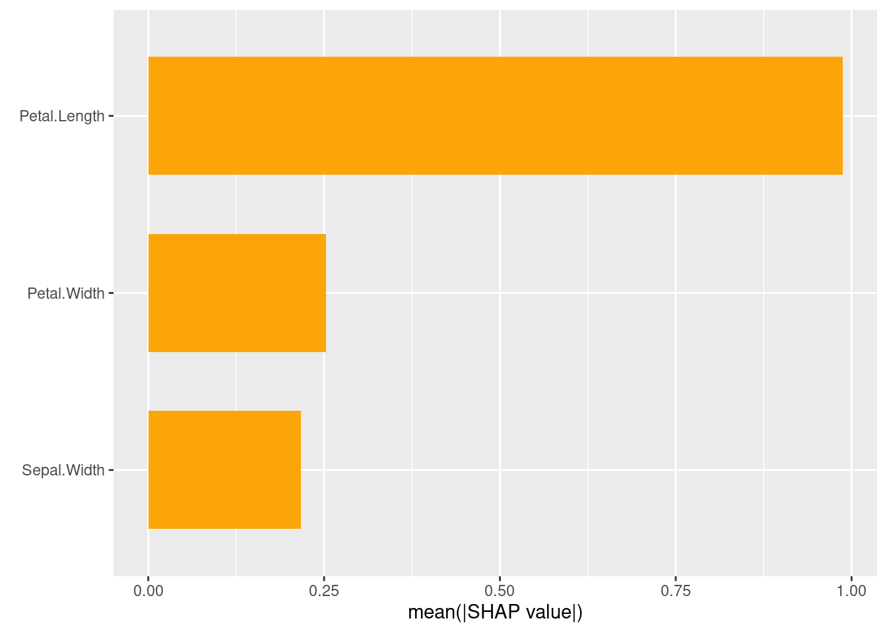
sv_importance(sv, kind = 'beeswarm')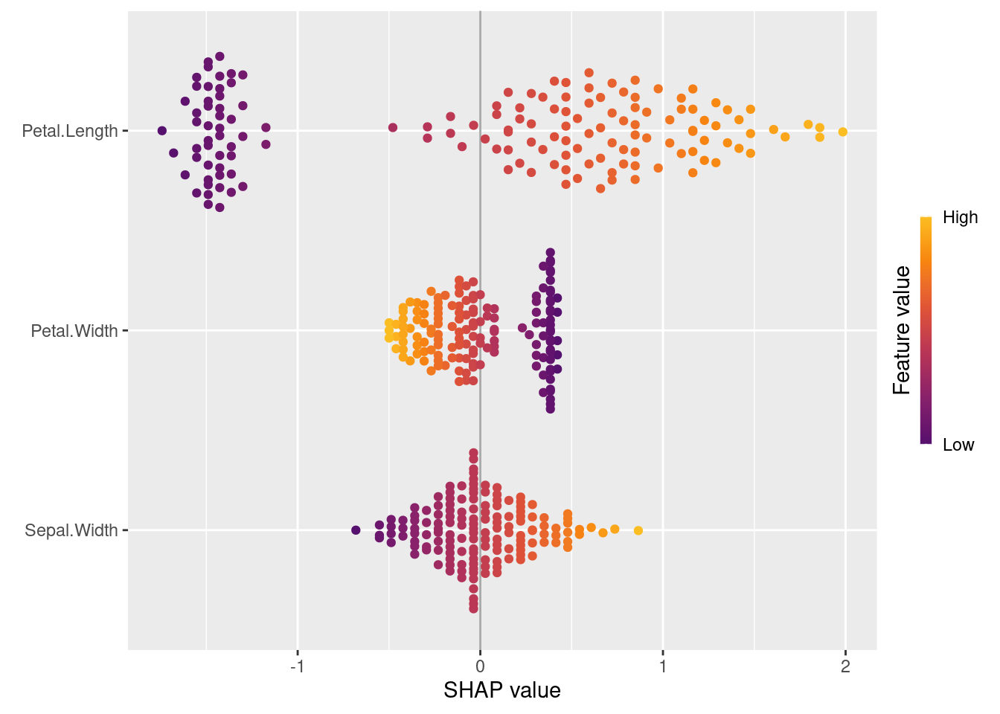
Classification Examples
For our classification examples we will also use the Iris dataset built into R, but this time try to classify which species of Iris we have based on Petal Length, Petal Width, Sepal Width, and Sepal Length.
Let’s do our first prediction. Let’s predict the species of irises from the 4 variables (sepal / petal width and length). First, let’s train the model:
ind1 <- createDataPartition(y=iris$Species,p=0.6,list=FALSE,times=1)
#list=FALSE, prevent returning result as a list
#times=1 to create one split
training <- iris[ind1,]
testing <- iris[-ind1,]
train_inputs=training[,1:4]
train_outputs=training[,5]
model <- train(train_inputs, train_outputs, method="lda")
predictions <- predict(model,testing)Let’s see how the model did. Our metrics are different for classification
table(predictions) # Same Counts!predictions
setosa versicolor virginica
20 20 20 table(testing$Species)
setosa versicolor virginica
20 20 20 sum(predictions==testing$Species)/length(predictions)*100 # % Accuracy[1] 100Wow! 100% accuracy is really good. Let’s mess around and see what happens with worse performers. Let’s try a Naive Bayes classifier.
model <- train(train_inputs, train_outputs, method="nb")
predictions <- predict(model,testing)
table(predictions)predictions
setosa versicolor virginica
20 18 22 table(testing$Species)
setosa versicolor virginica
20 20 20 Ahhhh. Looks like it incorrectly classified two versicolor as virginica.
We can visualized this output with a confusion matrix.
confusionMatrix(predictions,testing$Species)Confusion Matrix and Statistics
Reference
Prediction setosa versicolor virginica
setosa 20 0 0
versicolor 0 18 0
virginica 0 2 20
Overall Statistics
Accuracy : 0.9667
95% CI : (0.8847, 0.9959)
No Information Rate : 0.3333
P-Value [Acc > NIR] : < 2.2e-16
Kappa : 0.95
Mcnemar's Test P-Value : NA
Statistics by Class:
Class: setosa Class: versicolor Class: virginica
Sensitivity 1.0000 0.9000 1.0000
Specificity 1.0000 1.0000 0.9500
Pos Pred Value 1.0000 1.0000 0.9091
Neg Pred Value 1.0000 0.9524 1.0000
Prevalence 0.3333 0.3333 0.3333
Detection Rate 0.3333 0.3000 0.3333
Detection Prevalence 0.3333 0.3000 0.3667
Balanced Accuracy 1.0000 0.9500 0.9750library(reshape2)
Attaching package: 'reshape2'The following object is masked from 'package:tidyr':
smithscm <- confusionMatrix (predictions,testing$Species)
cm_df <- melt(cm$table)
ggplot(cm_df, aes(x = Prediction, y = Reference, fill = value)) +
geom_raster() + scale_fill_distiller(palette = "Spectral") 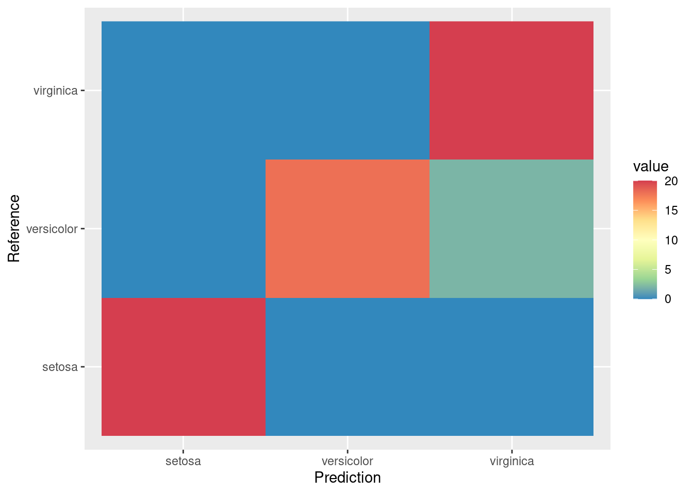
Let’s do one more because I want to show you how you can automate the process of tuning hyperparameters. Let’s do a KNN classifier, but tell R to go from K=1 to K=25. The Caret train function takes care of creating the validation set and applying these value of K to classify it.
KNN Classifier
indT <- createDataPartition(y=iris$Species,p=0.6,list=FALSE)
training <- iris[indT,]
testing <- iris[-indT,]
ModFit_KNN <- train(Species~.,training,method="knn",tuneGrid = expand.grid(k = 1:25))
ggplot(ModFit_KNN$results,aes(k,Accuracy))+
geom_point(color="blue")+
labs(title=paste("Optimum K is ",ModFit_KNN$bestTune),
y="Accuracy")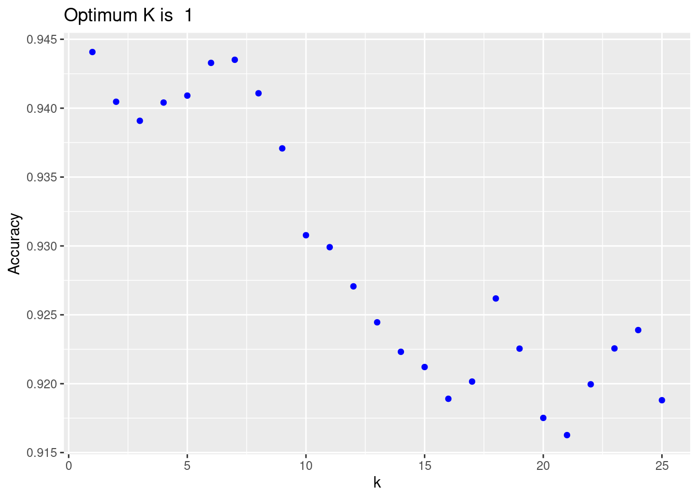
predict_KNN<- predict(ModFit_KNN,newdata=testing)
table(predict_KNN)predict_KNN
setosa versicolor virginica
20 20 20 confusionMatrix(testing$Species,predict_KNN)Confusion Matrix and Statistics
Reference
Prediction setosa versicolor virginica
setosa 20 0 0
versicolor 0 19 1
virginica 0 1 19
Overall Statistics
Accuracy : 0.9667
95% CI : (0.8847, 0.9959)
No Information Rate : 0.3333
P-Value [Acc > NIR] : < 2.2e-16
Kappa : 0.95
Mcnemar's Test P-Value : NA
Statistics by Class:
Class: setosa Class: versicolor Class: virginica
Sensitivity 1.0000 0.9500 0.9500
Specificity 1.0000 0.9750 0.9750
Pos Pred Value 1.0000 0.9500 0.9500
Neg Pred Value 1.0000 0.9750 0.9750
Prevalence 0.3333 0.3333 0.3333
Detection Rate 0.3333 0.3167 0.3167
Detection Prevalence 0.3333 0.3333 0.3333
Balanced Accuracy 1.0000 0.9625 0.9625cm <- confusionMatrix (predict_KNN,testing$Species)
cm_df <- melt(cm$table)
ggplot(cm_df, aes(x = Prediction, y = Reference, fill = value)) +
geom_raster() + scale_fill_distiller(palette = "Spectral") 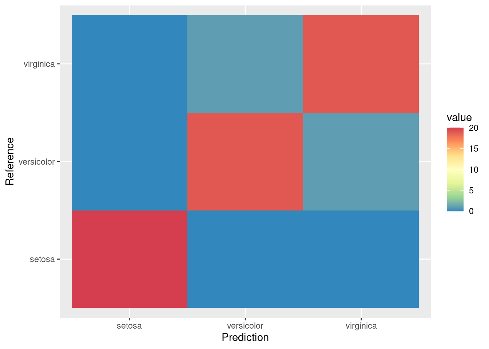
Try out other classifiers on your own! For quadratic discriminant, method=‘qda’. For SVM with linear (straight line) decision boundary, you set method = ‘svmLinear’ (you can also specify cost, which is the amount of error you are willing to tolerate). For non-linear boundaries, you can set method to ‘svmPoly’, ‘svmRadial’, etc. – see https://rdrr.io/cran/caret/man/models.html for all the options available in train for classification or regression.
If the number of observations is less than the number of variables, linear and quadratic discriminants won’t work. The way around it is to use principal component analysis (PCA), where we approximate the data with a small orthogonal set of new variables(principal components), each capturing an important trend in the data. This way, if several variables are correlated, they end up in the same principal component. Essentially, our data are approximated ith a small set of principal components; this approximation is then fed into linear or quadratic discriminants. This method is very robust to noise.
BONUS : Image Classification
To do image classification we need to download a very powerful machine learning tool called Tensorflow. (https://www.tensorflow.org/about)
TensorFlow is a free and open-source software library for machine learning and artificial intelligence developed by Google. It can be used across a range of tasks but has a particular focus on training and inference of deep neural networks.
Tensorflow has a lot of requirements to get up and running, so no pressure to install of this on your computer if you are low on memory or don’t have a use for using this in your day to day analyses. From here on out the chunks are set to eval=FALSE so you will need to run them manually. My suggestion is to carefully run these line by line. If you already have Python, some of these steps are not neccasary. Check in with me if you are unsure.
install.packages('tensorflow') # Install The Tensorflow Package
# note this isn't actually the tensorflow software just an R package that makes calls to it.
install.packages('reticulate') # Package that connects R and Python
reticulate::install_python() # Install Python
library(tensorflow) # Load Tensorflow R Package
#use_python("/usr/bin/python3") Just For Linux
install_tensorflow(extra_packages="pillow")
install.packages("keras") # Install keras Package For Image Classification
library(keras)
install_keras()library(keras)
library(tensorflow)options(timeout=800)
download.file('https://raw.githubusercontent.com/JeremyDForsythe/PersonalWebsite/master/content/teaching/MachineLearningInR/Data/barnOwltoTest.jpg','barnOwltoTest.jpg')
# Manually download the zip file into your working directory and unzip it.
# https://raw.githubusercontent.com/JeremyDForsythe/PersonalWebsite/master/content/teaching/MachineLearningInR/Data/birdArchive.zip
path_train <- paste0(getwd(),"/birdArchive/train/")
label_list <- list.files(path_train)
output_n <- length(label_list)
save(label_list, file="label_list.R")
width <- 224
height<- 224
target_size <- c(width, height)
rgb <- 3 #color channels
train_data_gen <- image_data_generator(rescale = 1/255,
validation_split = .2)
train_images <- flow_images_from_directory(path_train,
train_data_gen,
subset = 'training',
target_size = target_size,
class_mode = "categorical",
shuffle=F,
classes = label_list,
batch_size=1,
seed = 2021)
validation_images <- flow_images_from_directory(path_train,
train_data_gen,
subset = 'validation',
target_size = target_size,
class_mode = "categorical",
classes = label_list,
batch_size=1,
seed = 2021)
plot(as.raster(train_images[[1]][[1]][1,,,]))
mod_base <- application_xception(weights = 'imagenet',
include_top = FALSE, input_shape = c(width, height, 3))
freeze_weights(mod_base)
model_function <- function(learning_rate = 0.001,
dropoutrate=0.2, n_dense=1024){
k_clear_session()
model <- keras_model_sequential() %>%
mod_base %>%
layer_global_average_pooling_2d() %>%
layer_dense(units = n_dense) %>%
layer_activation("relu") %>%
layer_dropout(dropoutrate) %>%
layer_dense(units=output_n, activation="softmax")
model %>% compile(
loss = "categorical_crossentropy",
optimizer = optimizer_adam(learning_rate = learning_rate),
metrics = "accuracy"
)
return(model)
}
model <- model_function()
model
batch_size <- 1
epochs <- 3
path_test <- paste0(getwd(),"/birdArchive/test/")
test_data_gen <- image_data_generator(rescale = 1/255)
test_images <- flow_images_from_directory(path_test,
test_data_gen,
target_size = target_size,
class_mode = "categorical",
classes = label_list,
shuffle = F,
batch_size=1,
seed = 2021)
hist <- model %>% fit(
train_images,
steps_per_epoch = train_images$n %/% batch_size,
epochs = epochs,
validation_data = validation_images,
validation_steps = validation_images$n %/% batch_size,
verbose = 2
)
model %>% evaluate(test_images,
steps = test_images$n)
####
# Test with new image
test_image <- image_load("barnOwltoTest.jpg",
target_size = target_size)
x <- image_to_array(test_image)
x <- array_reshape(x, c(1, dim(x)))
x <- x/255
pred <- model %>% predict(x)
pred <- data.frame("Bird" = label_list, "Probability" = t(pred))
pred <- pred[order(pred$Probability, decreasing=T),][1:5,]
pred$Probability <- paste(format(100*pred$Probability,2),"%")
pred